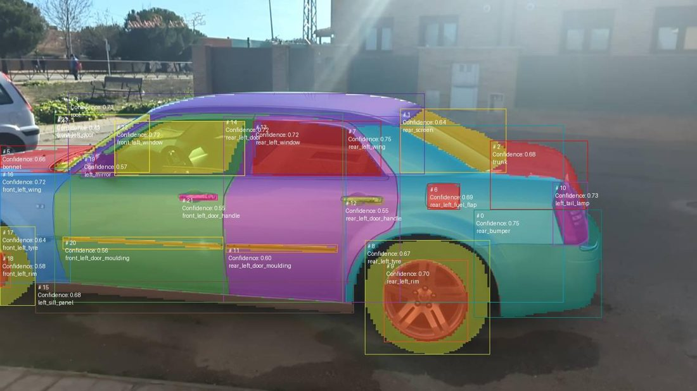
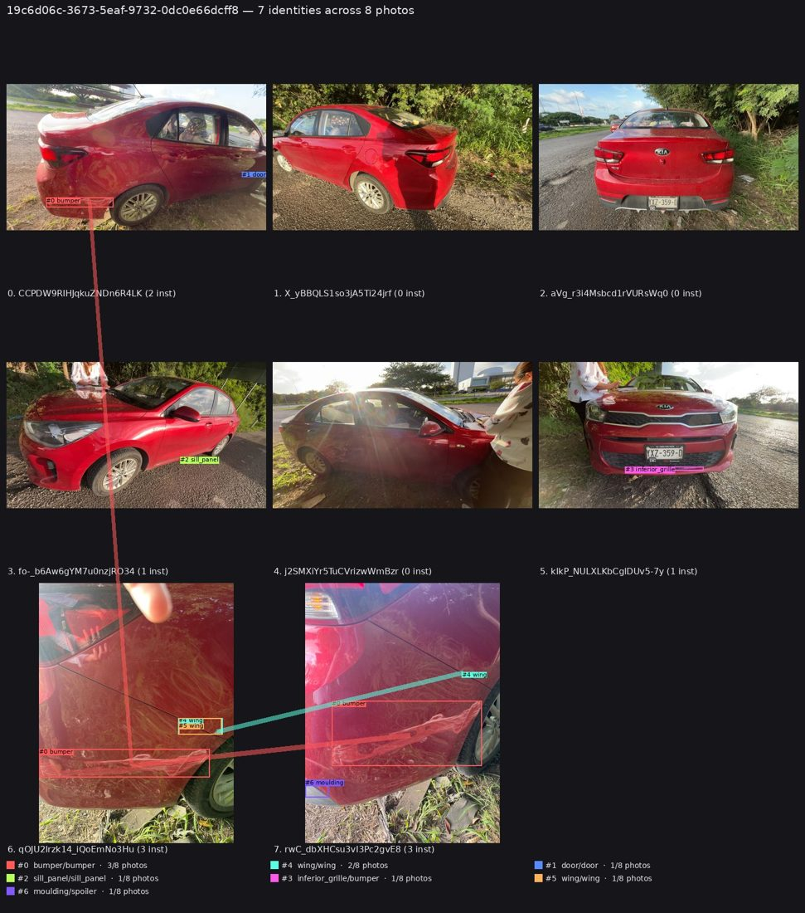
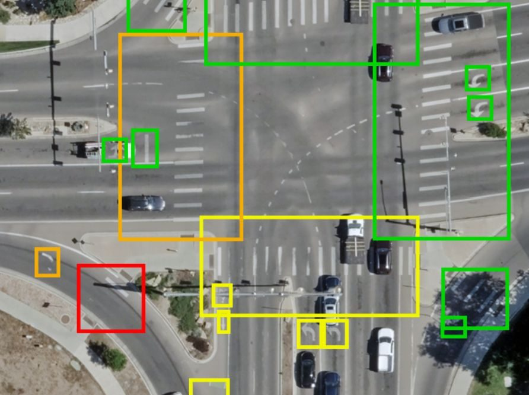

Máster en Innovación Tecnológica (MINT)
Introduction · Python for machine learning
imanolgranada@gmail.com

Part segmentation and damage detection on a car photo.
Find the damage in a photo of a vehicle (detection and segmentation).

Decide which photos show the same vehicle and the same damage.
The models you will build in this course are the building blocks: a classifier that says damaged or not is logistic regression; one that finds where is a CNN (neural-network part, chapter 4).

Aerial images of roads: each detected element gets a condition from poor to good.
Live football: the probability that a shot becomes a goal.
Raise your hand if you have…
And, in one sentence:
There is no wrong answer. The next slides are for everyone: they fix the Python that all the labs use, so that in class we talk about machine learning and not about syntax.
One deck per topic, with the derivations step by step and interactive figures. → advances every step.
Web pages that go deeper than the slides: full derivations, the assumptions of each method, how to check them and what to do when they fail.
Jupyter notebooks that open in Google Colab, nothing to install. You implement the algorithm and see it work.
notebooks/
| Part | Topics | Labs |
|---|---|---|
| 0 | Python, NumPy, pandas, Matplotlib (this deck) | Lab 0 |
| I | Supervised learning, linear and logistic regression, softmax, regularization, trees, ensembles, SVM | Labs 1–6 (scikit-learn, from scratch in NumPy) |
| II | MLP, backpropagation, training, CNN, RNN and LSTM, transformers, embeddings and RAG | Labs 7–15 (NumPy, then PyTorch) |
Fewer lines of code, high level: the code looks like the idea.
Cross-platform: the same code on your laptop, Colab or a server.
NumPy, pandas, scikit-learn, Matplotlib, PyTorch… the whole ML ecosystem is Python.
Models are objects: model.fit(X, y). Built-in data structures: list, dict, set.
Drawback: Python is an interpreted scripting language. That makes it convenient but slower than C or C++. The fix: the libraries do the heavy work in compiled C/C++ (and CUDA) under the hood, and we call them on whole arrays instead of looping in Python. We measure it on slide 22.
This is the part of the language you need, not a complete Python course. Everything below is in Lab 0, which you should run before the first class.
| Part of Lab 0 | What it is | Why it matters in the labs |
|---|---|---|
| 1 Python essentials | types, containers, control flow, functions, comprehensions | every notebook |
| 2 Object-oriented programming | classes, self, inheritance | models are classes: fit / predict, PyTorch nn.Module |
| 3 NumPy | arrays, indexing, vectorisation, axis, broadcasting, @ | vectors, matrices and gradients: the from-scratch labs |
| 4 pandas | Series, DataFrame, loc / iloc, groupby, NaN | loading and inspecting datasets |
| 5 Matplotlib | scatter, line, histogram, subplots | every plot you will produce |
| 6 Putting it together | load → split → scale → fit → evaluate → plot | the skeleton of every lab |
Docs you will use all the time: NumPy · pandas · scikit-learn · Matplotlib. In a notebook, help(np.mean) or np.mean? shows the documentation.
Part 1 of Lab 0
n_samples = 150 # int learning_rate = 0.01 # float model_name = "logistic" # str is_fitted = False # bool nothing = None # NoneType epoch, loss, acc = 7, 0.03421, 0.9812 print(f"epoch {epoch:3d}: loss = {loss:.4f}, " f"accuracy = {acc:.2%}")
# output
epoch 7: loss = 0.0342, accuracy = 98.12%
"3" + 4 is an error, Python never converts silently.None means "no value".f-strings put expressions inside a string. You will use them to print training metrics:
| Format | Meaning |
|---|---|
:3d | integer, width 3 |
:.4f | float, 4 decimals |
:.2% | percentage, 2 decimals (0.9812 → 98.12%) |
| Type | Written | Ordered | Mutable | Typical use in ML |
|---|---|---|---|---|
list | [1, 2, 3] | yes | yes | a sequence you modify, e.g. the loss history |
tuple | (1, 2, 3) | yes | no | a fixed record: array shapes are tuples |
dict | {"a": 1} | yes (insertion) | yes | named values: hyperparameters, config |
set | {1, 2, 3} | no | yes | unique values: the set of class labels |
losses = [0.9, 0.6, 0.4] losses.append(0.3) losses[0], losses[-1] # 0.9 0.3 losses[1:3] # [0.6, 0.4] shape = (150, 4) n_rows, n_cols = shape # unpacking
params = {"lr": 0.01, "epochs": 100}
params["batch_size"] = 32
params.get("momentum", 0.9) # 0.9: default
labels = [0, 1, 1, 0, 2, 1, 2]
set(labels) # {0, 1, 2}
Careful: slicing is [start:stop] with stop excluded. losses[1:3] gives elements 1 and 2. The same convention holds in NumPy and in df.iloc.
Indentation (4 spaces) delimits blocks, there are no braces.
accuracy = 0.87
if accuracy > 0.95:
verdict = "excellent"
elif accuracy > 0.80:
verdict = "acceptable"
else:
verdict = "needs work" # → "acceptable"
for loss in [0.9, 0.6, 0.4]: # the elements
print(f"loss={loss}")
for i, loss in enumerate([0.9, 0.6, 0.4]):
print(f"epoch {i}: {loss}") # index and value
zip walks two sequences in parallel: perfect for labels and predictions.
y_true = [0, 1, 1, 0]
y_pred = [0, 1, 0, 0]
for true, pred in zip(y_true, y_pred):
mark = "ok" if true == pred else "WRONG"
print(f"true={true} pred={pred} {mark}")
# output
true=0 pred=0 ok
true=1 pred=1 ok
true=1 pred=0 WRONG
true=0 pred=0 ok
def accuracy_score(y_true, y_pred, as_percentage=False):
"""Fraction of correct predictions."""
n_correct = sum(t == p
for t, p in zip(y_true, y_pred))
score = n_correct / len(y_true)
return score * 100 if as_percentage else score
y_true = [0, 1, 1, 0, 1]
y_pred = [0, 1, 0, 0, 1]
accuracy_score(y_true, y_pred) # 0.8
accuracy_score(y_true, y_pred,
as_percentage=True) # 80.0
Check by hand: 4 of the 5 predictions match → 4/5 = 0.8.
def defines a function; arguments with a default value are optional.as_percentage=True) to make calls readable: scikit-learn does this everywhere.help(f) or f? shows it: that is how you read the scikit-learn documentation.Try it: help(np.mean) prints every argument of a NumPy function.
Read it as: [ expression | for each item | if condition ]
values = [1, 2, 3, 4, 5, 6]
squares = [] # the verbose way
for v in values:
squares.append(v ** 2)
squares = [v ** 2 for v in values]
evens = [v for v in values if v % 2 == 0]
labels = ["high" if v > 3 else "low"
for v in values]
squared_map = {v: v ** 2 for v in values}
# results squares [1, 4, 9, 16, 25, 36] evens [2, 4, 6] labels ['low']*3 + ['high']*3 # 3 + 3 squared_map {1: 1, 2: 4, 3: 9, 4: 16, 5: 25, 6: 36}
Solution: mu = sum(v)/n, sigma = (sum((x-mu)**2 for x in v)/n) ** 0.5, return [(x-mu)/sigma for x in v]. For [10, 12, 14, 16, 18]: μ = 14, σ = √8 ≈ 2.83 → z = [−1.414, −0.707, 0, 0.707, 1.414], mean 0.
Part 2 of Lab 0
why model.fit(X, y) works
Every model in this course is an object:
model = LogisticRegression(C=1.0) # create model.fit(X_train, y_train) # changes the state y_pred = model.predict(X_test) # uses that state print(model.coef_) # learnt in fit
That __init__ / fit / predict pattern is the scikit-learn API. PyTorch models follow the same idea with nn.Module.
__init__selfdata.name: no parenthesesdata.n_samples(): with parenthesesclass Dataset:
"""A tiny container for features and labels."""
def __init__(self, X, y, name="unnamed"):
self.X = X # attributes of THIS one
self.y = y
self.name = name
def n_samples(self):
return len(self.y)
def class_counts(self):
counts = {}
for label in self.y:
counts[label] = counts.get(label, 0) + 1
return counts
data = Dataset(X=[[1, 2], [3, 4], [5, 6], [7, 8]],
y=[0, 1, 1, 1], name="toy")
data.name # 'toy'
data.n_samples() # 4
data.class_counts() # {0: 1, 1: 3}
Dunder methods (__like_this__) hook into Python syntax. __len__ gives len(data); __repr__ is what a notebook shows for the object: Dataset(name='toy', n=4, n_features=2).
PyTorch's forward runs through __call__, which is why you write model(x) and not model.forward(x).
class BaseEstimator:
def fit(self, X, y):
raise NotImplementedError
def predict(self, X):
raise NotImplementedError
def score(self, X, y): # inherited for free
preds = self.predict(X)
errors = [(p - t) ** 2
for p, t in zip(preds, y)]
return sum(errors) / len(errors) # MSE
class MeanRegressor(BaseEstimator):
"""Predicts the training mean."""
def fit(self, X, y):
self.mean_ = sum(y) / len(y)
return self # so calls chain
def predict(self, X):
return [self.mean_ for _ in X]
X = [[1], [2], [3], [4], [5]] y = [2.0, 4.1, 5.9, 8.2, 9.8] model = MeanRegressor().fit(X, y) model.mean_ # 6.0 model.predict([[10]]) # [6.0] model.score(X, y) # 7.78 (MSE)
class Net(nn.Module) in PyTorch works the same way.self.mean_ with a trailing underscore = learnt from data in fit. Hyperparameters, set in __init__, have none.fit returns self, so Model().fit(X, y).predict(X) works.Part 3 of Lab 0
vectors, matrices, gradients
An array is a contiguous block of memory of one type: a vector, a matrix, or a stack of matrices. You operate on it as a whole.
a = np.array([1, 2, 3, 4]) # shape (4,) M = np.array([[1, 2, 3], [4, 5, 6]]) # shape (2, 3) np.zeros(3) # [0. 0. 0.] np.arange(0, 10, 2) # [0 2 4 6 8] stop excluded np.linspace(0, 1, 5) # 5 points, both ends np.eye(3) # identity matrix
When a lab throws an error it is nearly always a shape mismatch: print .shape first.
X: shape (n_samples, n_features), one row per observation (our $m\times n$).y: shape (n_samples,), a 1-D vector of targets.X = np.array([[5.1, 3.5], [4.9, 3.0],
[4.7, 3.2], [4.6, 3.1]])
y = np.array([0, 0, 1, 1])
X.shape # (4, 2): 4 samples, 2 features
y.shape # (4,)
y_col = y.reshape(-1, 1)
y_col.shape # (4, 1): a column
y_col.reshape(-1).shape # (4,): flat again
A very common bug is y with shape (n, 1) instead of (n,). -1 means "work this dimension out for me".
For 2-D arrays: array[rows, columns]. Here M = np.arange(12).reshape(3, 4):
| col 0 | col 1 | col 2 | col 3 | |
| row 0 | 0 | 1 | 2 | 3 |
| row 1 | 4 | 5 | 6 | 7 |
| row 2 | 8 | 9 | 10 | 11 |
M[0, 0] # 0 M[1] # [4 5 6 7] row 1 M[:, 2] # [2 6 10] column 2 (':' = all) M[0:2, 1:3] # [[1 2], [5 6]] the blue block M[-1] # [8 9 10 11] last row
values = np.array([3.2, 7.8, 1.1, 9.4, 5.0]) mask = values > 5 # [F T F T F] values[mask] # [7.8 9.4] mask.sum() # 2 (True counts as 1) values[(values > 2) & (values < 6)] # [3.2 5.]
Combine conditions with & and |, each one in parentheses.
You will do this in every classification lab: select the rows of one class.
X[y == 1] # [[4.7 3.2], [4.6 3.1]]
Operations apply elementwise to the whole array, in compiled C code.
a = np.array([1., 2., 3., 4.]) b = np.array([10., 20., 30., 40.]) a + b # [11. 22. 33. 44.] a * b # [10. 40. 90. 160.] elementwise! a ** 2 # [1. 4. 9. 16.] a * 3 # [3. 6. 9. 12.] np.sqrt(a) # [1. 1.414 1.732 2.] np.exp(a) # [2.72 7.39 20.09 54.6]
a * b is not a matrix product. That one is @ (slide 25).
big = np.random.rand(2_000_000) [v ** 2 for v in big] # pure Python loop big ** 2 # NumPy
| Square 2 million numbers | Time |
|---|---|
| Python loop | 806 ms |
| NumPy | 25 ms |
| speed-up | 32× |
Measured in Lab 0 on one run (your machine will differ, the order of magnitude will not). The same reason is behind GPU training in the neural-network part.
axis argumentaxis is the dimension that gets collapsed.
| feature 0 | feature 1 | axis=1 → | |
| sample 0 | 1 | 10 | 5.5 |
| sample 1 | 2 | 20 | 11.0 |
| sample 2 | 3 | 30 | 16.5 |
| sample 3 | 4 | 40 | 22.0 |
| axis=0 ↓ | 2.5 | 25.0 |
axis=0: collapse the rows → one value per column (per feature).axis=1: collapse the columns → one value per row (per sample).X.shape # (4, 2) X.mean() # 13.75 everything → scalar X.mean(axis=0) # [ 2.5 25. ] per feature X.mean(axis=1) # [5.5 11. 16.5 22.] per sample X.sum(), X.min(), X.max() # 110.0 1.0 40.0 X.std(axis=0) # [1.118 11.180] X.argmax(axis=1) # [1 1 1 1] index of the largest
Say it aloud: "axis=0 gives me a value per feature". Getting it backwards is a classic silent bug.
argmax(axis=1) turns a matrix of class probabilities into predicted labels: the exact line you will use in the multiclass labs.
mu = X.mean(axis=0) # shape (2,) sd = X.std(axis=0) # shape (2,) X_scaled = (X - mu) / sd # (4,2) - (2,) → (4,2)
| X (4×2) | mu stretched | X_scaled | ||
| 1 10 | − | 2.5 25 | → ÷ sd → | −1.342 −1.342 |
| 2 20 | − | 2.5 25 | −0.447 −0.447 | |
| 3 30 | − | 2.5 25 | 0.447 0.447 | |
| 4 40 | − | 2.5 25 | 1.342 1.342 |
Check row 0, feature 0: (1 − 2.5) / 1.118 = −1.342. New mean 0 and std 1 per feature.
The rule: compare the shapes from the right. Two dimensions are compatible if they are equal or one of them is 1.
(4, 2) vs (2,): the (2,) is treated as (1, 2) → compatible → stretched to (4, 2). No data is copied.
np.ones((4, 2)) + np.ones((3,)) # ValueError: operands could not be broadcast # together with shapes (4,2) (3,)
2 vs 3: neither equal nor 1, so it fails. The error message names the clashing shapes: read it.
@ is the matrix product, the operation behind every linear model and every neural-network layer.
A = np.array([[1, 2], [3, 4]]); v = np.array([1, 1]) A @ v # [3 7] A @ A # [[ 7 10], [15 22]] A.T # [[1 3], [2 4]] transpose np.linalg.inv(A) # [[-2. 1.], [1.5 -0.5]]
Check the first one: row (1, 2) · (1, 1) = 3 and row (3, 4) · (1, 1) = 7.
Lab 1 solves least squares with the normal equation. The maths maps directly onto the code:
X = np.column_stack([np.ones(n), x]) # (100, 2)
theta = np.linalg.inv(X.T @ X) @ X.T @ y
100 points from y = 3 + 2x plus noise (seed 0): estimated intercept 2.993 (true 3.0), slope 1.987 (true 2.0). The column of ones is the intercept.
Always seed your generator. Without a seed the results change on every run and nobody can reproduce yours.
rng = np.random.default_rng(seed=42) rng.random(3) # [0.774 0.439 0.859] rng.normal(0, 1, 3) # [ 0.941 -1.951 -1.302] rng.integers(0, 10, 5) # [7 7 7 7 5] rng.permutation(10) # shuffled indices 0..9 np.random.default_rng(42).random(3) # same first line
np.random.default_rng(seed). In old code you will see np.random.seed(42).random_state=42, e.g. in train_test_split.With X = [[1,2],[3,6],[5,4],[7,8]]: (1) mean of each column, (2) rows with first column > 3, (3) standardise per column, (4) shape of X @ X.T.
Answers: (1) X.mean(axis=0) = [4, 5]; (2) X[X[:, 0] > 3] = [[5,4],[7,8]]; (3) (X - X.mean(axis=0)) / X.std(axis=0); (4) (4, 4).
Part 4 of Lab 0
tables with named columns
NumPy arrays are homogeneous and anonymous. Real data has named columns of different types, text, and missing values.
The workflow in every lab: load with pandas → explore and clean → hand a NumPy array to the model.
df = pd.DataFrame({
"sepal_length": [5.1, 4.9, 4.7, 4.6, 6.5, 6.0, 6.7, 5.8],
"sepal_width": [3.5, 3.0, 3.2, 3.1, 3.0, 2.7, 3.1, 2.7],
"petal_length": [1.4, 1.4, 1.3, 1.5, 5.2, 5.1, 4.7, 5.1],
"species": ["setosa"]*4 + ["virginica"]*2
+ ["versicolor", "virginica"]})
df.shape # (8, 4)
df.head(3) # first rows
df.info() # dtypes and non-null counts
df.describe() # mean, std, quartiles
df["species"].value_counts()
# setosa 4, virginica 3, versicolor 1
Those first commands are what you run on any dataset you have never seen. value_counts() shows the class balance.
| Code | Returns |
|---|---|
df["col"] | one column, a Series |
df[["a", "b"]] | several columns, a DataFrame (double brackets) |
df.loc[rows, cols] | selection by label |
df.iloc[rows, cols] | selection by integer position |
df.loc[0:2] includes row 2 (3 rows); df.iloc[0:2] excludes position 2 (2 rows). iloc follows normal Python slicing, loc does not.
Filtering is the NumPy mask again:
df[df["petal_length"] > 5.0] # 3 rows df[(df["species"] == "virginica") & (df["sepal_width"] < 3.0)] # 2 rows df[df["species"].isin(["setosa", "versicolor"])].shape # (5, 4)
As in NumPy: & and |, each condition in parentheses.
# vectorised: the preferred way df["petal_ratio"] = (df["petal_length"] / df["sepal_length"]) # elementwise, if no vectorised version exists df["size"] = df["petal_length"].apply( lambda v: "large" if v > 4 else "small") # models need numbers, not strings df["target"] = df["species"].map( {"setosa": 0, "versicolor": 1, "virginica": 2})
groupby = split → apply → combine:
df.groupby("species")["petal_length"].mean()
# setosa 1.400 versicolor 4.700 virginica 5.133
Real data has holes (NaN). You must decide what to do: dropping and imputing are different modelling choices.
dirty = df[["sepal_length", "sepal_width",
"petal_length"]].copy()
dirty.loc[1, "sepal_width"] = np.nan
dirty.loc[5, "petal_length"] = np.nan
dirty.isna().sum() # 0, 1, 1 per column
dirty.dropna().shape # (6, 3): 2 rows lost
dirty.fillna(dirty.mean()) # NaN → column mean
Imputing with the mean of the whole dataset before splitting leaks test information: compute it on the training set only (slide 33).
feature_cols = ["sepal_length", "sepal_width",
"petal_length"]
X = df[feature_cols].to_numpy() # (8, 3) float64
y = df["target"].to_numpy() # (8,) int64
# data usually comes from a file:
df = pd.read_csv("data/data.csv")
df = pd.read_csv("https://.../data.csv")
read_csv options: sep=";", header=None, names=[...], na_values=["?", "N/A"], usecols=[...].
species?sepal_width of virginica only?is_setosa = 1 / 0?petal_length descending?value_counts() → 4 / 3 / 1 · df.loc[df["species"]=="virginica", "sepal_width"].mean() = 2.8 · (df["species"]=="setosa").astype(int) · df.select_dtypes("number").sort_values("petal_length", ascending=False)
x = np.linspace(0, 10, 50)
y = 2 * x + 1 + rng.normal(0, 2, size=50)
plt.figure(figsize=(6, 4))
plt.scatter(x, y, alpha=0.7, label="observations")
plt.plot(x, 2 * x + 1, color="red", linewidth=2,
label="true relationship")
plt.xlabel("x"); plt.ylabel("y")
plt.title("Always label your axes")
plt.legend(); plt.grid(alpha=0.3)
plt.show()
Three things are enough: a scatter, a line, and the labels.
fig, axes = plt.subplots(1, 2, figsize=(10, 3.5))
axes[0].hist(rng.normal(0, 1, 1000), bins=30)
axes[0].set_title("Histogram")
axes[1].plot(losses, marker="o")
axes[1].set_title("Training loss")
plt.tight_layout(); plt.show()
fig is the canvas, axes the individual plots. With subplots the methods change name: plt.xlabel → ax.set_xlabel, plt.title → ax.set_title.
Training-loss curves like the right panel are how you will diagnose every model in the course.
X = df.drop(columns="target").to_numpy()
y = df["target"].to_numpy()
X_train, X_test, y_train, y_test = train_test_split(
X, y, test_size=0.2, random_state=42)
scaler = StandardScaler().fit(X_train) # TRAIN only
X_train_s = scaler.transform(X_train)
X_test_s = scaler.transform(X_test)
model = LinearRegression().fit(X_train_s, y_train)
y_pred = model.predict(X_test_s)
rmse = mean_squared_error(y_test, y_pred) ** 0.5
base = mean_squared_error(
y_test, np.full_like(y_test, y_train.mean())) ** 0.5
| Test set (89 samples) | Value |
|---|---|
| Baseline RMSE (predict the mean) | 73.22 |
| Linear regression RMSE | 53.85 |
| R² | 0.453 |
The model beats the baseline, so it learnt something. 0.453 means it explains under half the variance: good enough for a first model, not for a final one.
Why fit the scaler on the training set only? Fitting it on all the data lets information about the test set (its mean and std) leak into training, and the test score becomes optimistic. This is the data leakage of chapter 01.
list and a dict, and when to use each?self refer to inside a method?fit and predict do, and why does fit return self?X.shape == (150, 4), how many samples and features?X.mean(axis=0) return, and with what shape?(X - X.mean(axis=0)) / X.std(axis=0) valid despite the shape mismatch?X whose label is 1?df.loc and df.iloc?If any is shaky, go back to that part of Lab 0: the labs assume all of them. In Colab: Shift+Enter runs a cell, Tab autocompletes, Shift+Tab shows a function's signature, object? its docstring.
More: NumPy absolute basics · 10 minutes to pandas · scikit-learn getting started · Python Data Science Handbook (J. VanderPlas, free online)
The shared starting point of the course: the subset of Python, NumPy and pandas that the labs use. About 60–90 minutes with the exercises.
fit / predict contract.axis, broadcasting, @, seeds (Exercise 3).lab 0 - Python for Machine Learning.ipynbNext: chapter 01, supervised learning, then Lab 1 (OLS from scratch).